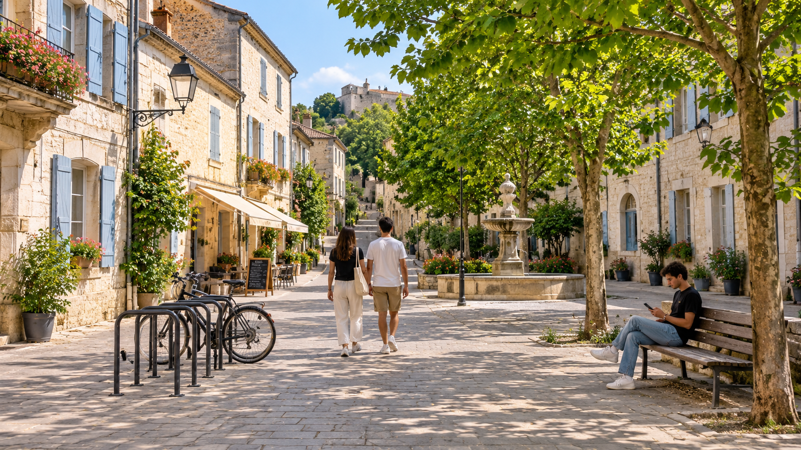

Ensemble, prenons soin de notre ville.
Un éclairage en panne, un trottoir abîmé ?
Signalez ce qui mérite notre attention.

Comment ça marche ?
-
1
Décrivez le problème
Choisissez un type et précisez la situation.
-
2
Indiquez le lieu
Renseignez l’adresse ou l’emplacement.
-
3
Envoyez votre signalement
Ajoutez une photo si vous le souhaitez.